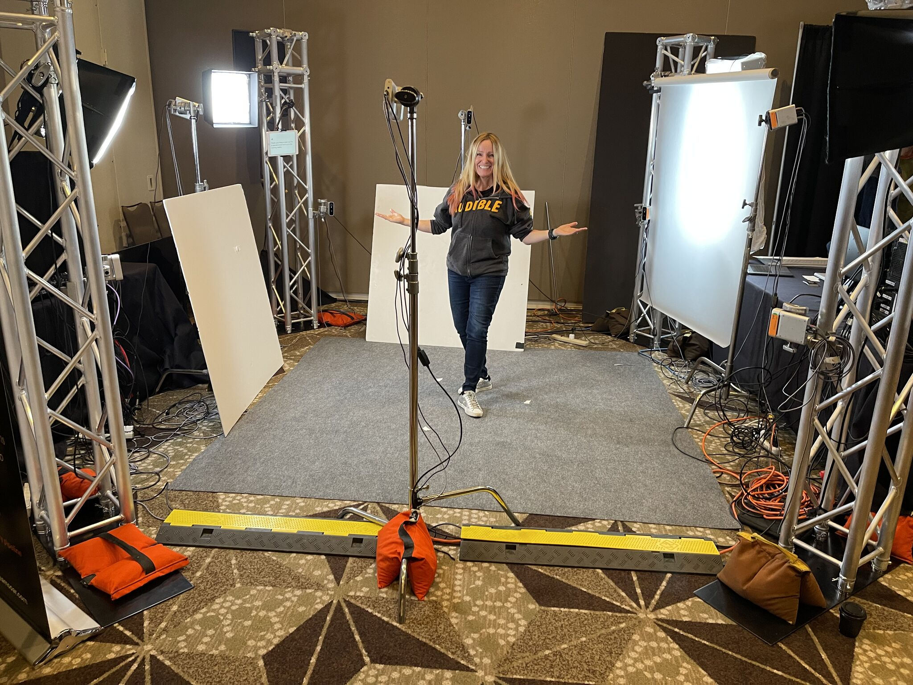

From Human to Holographic Hero: My Volumetric Capture Experience at SXSW
March 18, 2022·1 min read·SXSW

Recently, I had the incredible opportunity to immerse myself in the world of volumetric capture at SXSW. As a volunteer for the demo, I found myself standing amidst metal trusses, surrounded by a setup of specialized lighting and cameras meticulously arranged to capture every angle without casting shadows.
The experience was nothing short of extraordinary. As I stood in the center of this intricate setup, I could feel the anticipation building. Then, with the anticipation of an X-ray at the dentist and the click of a button (I guess?), the magic unfolded. I was captured in 3D, my expression meticulously preserved in digital form. While the 3d capture wasn't perfect, seeing that it was taken in a ballroom and not a green screen studio, it was till pretty cool.
But beyond the novelty of seeing myself in 3D, the experience left me contemplating the immense potential of volumetric capture technology. From immersive storytelling to virtual experiences, the possibilities are truly endless. Imagine being able to step into a virtual world and interact with digital avatars that look and move just like real people. It's a glimpse into the future of immersive entertainment and communication.
As we continue to push the boundaries of technology, experiences like volumetric capture remind us of the power of innovation to transport us to new realms of possibility. And as I reflect on my own experience at SXSW, I can't help but feel excited about the endless possibilities that lie ahead in the world of immersive technology.
#3d #volumetricVideo
Jenn Lee
Lead of Emerging Technology & Automation at Disney. Building in XR since 2019.
Daily Meta Ray-Ban wearer. Creality Raptor Pro owner (still learning).
Everything I build, break, and learn ends up here.